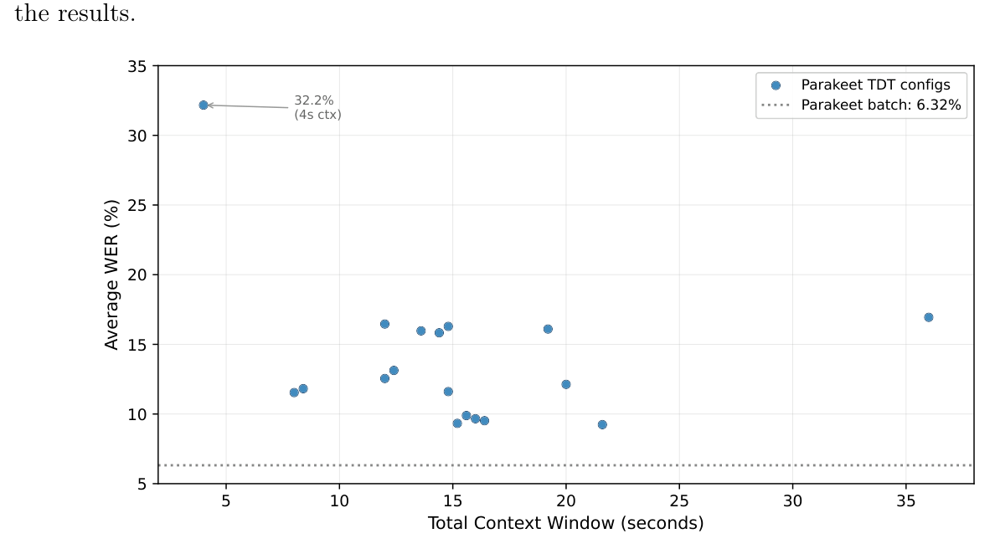
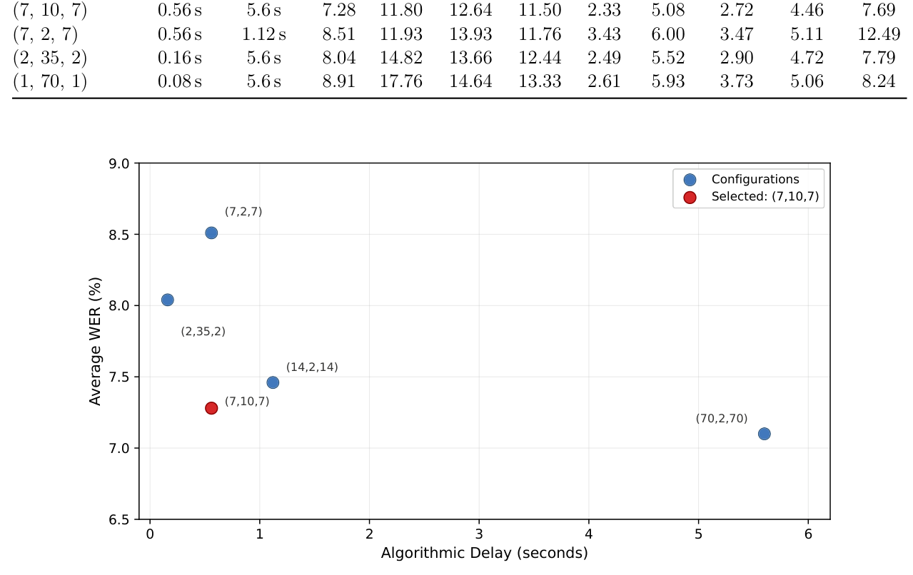
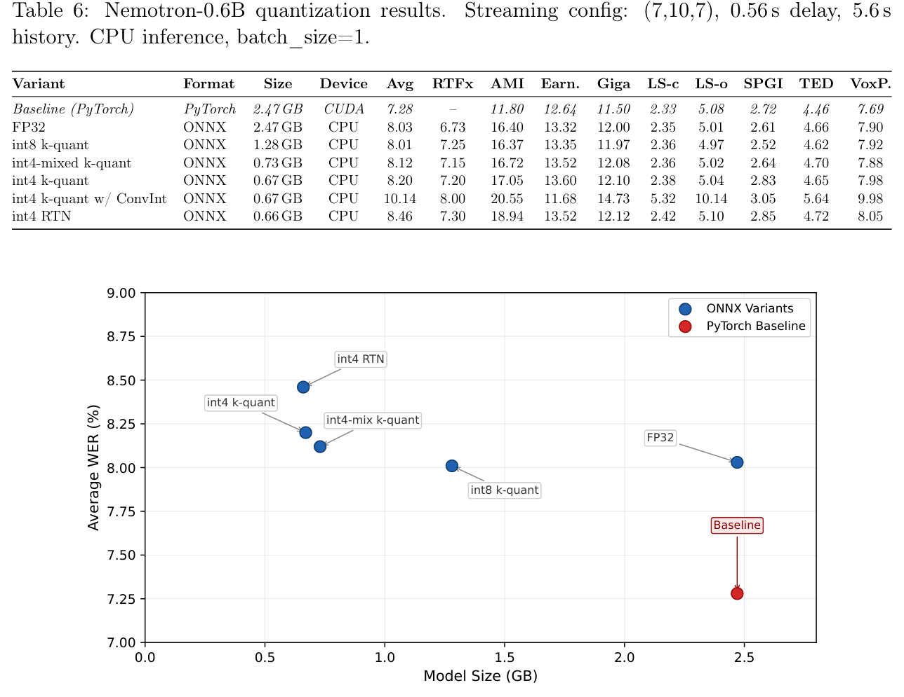
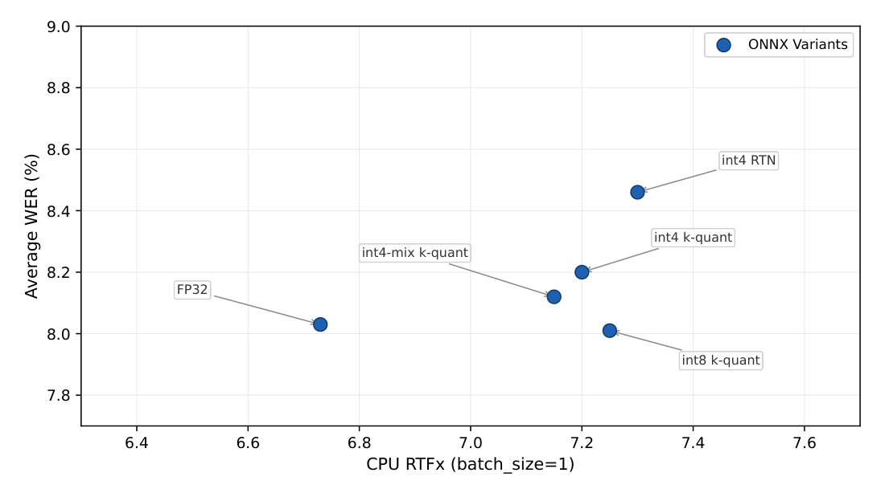
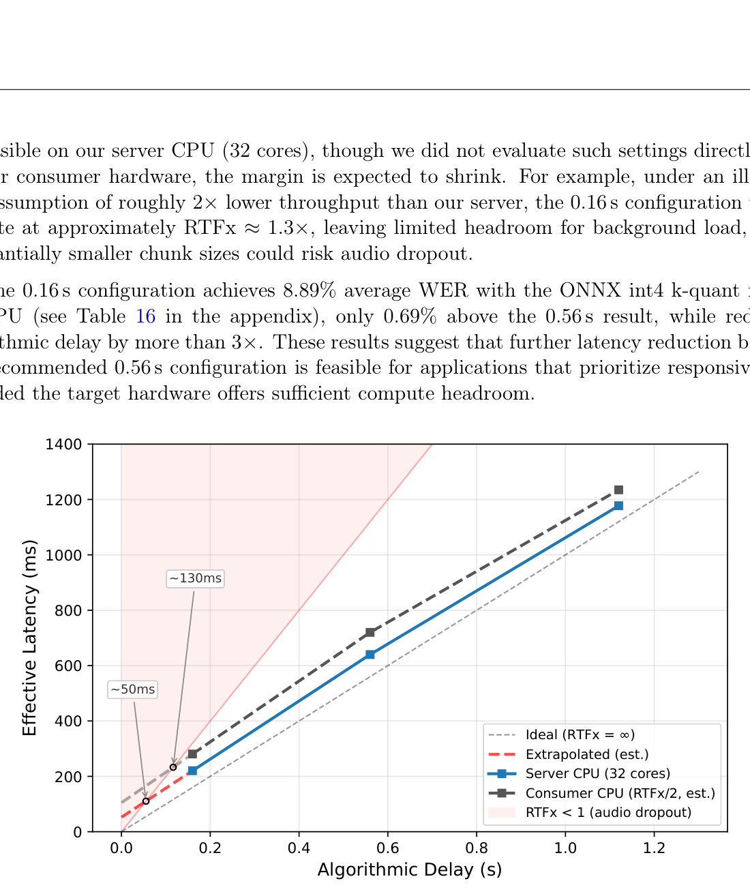

Nenad Banfic, David Fan, Kunal Vaishnavi, Sam Kemp, Sunghoon Choi, Rui Ren, Sayan Shaw, Meng Tang CoreAI, Microsoft April 2026
摘要Abstract
Deploying high-quality automatic speech recognition (ASR) on edge devices requires models that jointly optimize accuracy, latency, and memory footprint while operating entirely on CPU without GPU acceleration.
在边缘设备上部署高质量的自动语音识别（ASR），要求模型同时优化准确率、延迟和内存占用，并且完全在 CPU 上运行、不依赖 GPU 加速。
We conduct a systematic empirical study of state-of-the-art ASR architectures, encompassing encoder–decoder, transducer, and LLM- based paradigms, evaluated across batch, chunked, and streaming inference modes. Through a comprehensive benchmark of over 50 configurations spanning OpenAI Whisper, NVIDIA Nemotron, Parakeet TDT, Canary, Conformer Transducer, and Qwen3-ASR, we identify NVIDIA’s Nemotron Speech Streaming as the strongest candidate for real-time English streaming on resource-constrained hardware. We then re-implement the complete streaming inference pipeline in ONNX Runtime and conduct a controlled evaluation of multiple posttraining quantization strategies, including importance-weighted k-quant, mixed-precision schemes, and round-to-nearest quantization, combined with graph-level operator fusion. These optimizations reduce the model from 2.47 GB to as little as 0.67 GB while maintaining word error rate (WER) within 1% absolute of the full-precision PyTorch baseline. Our recommended configuration, the int4 k-quant variant, achieves 8.20% average streaming WER across eight standard benchmarks, running comfortably faster than real-time on CPU with 0.56 s algorithmic latency, establishing a new quality–efficiency Pareto point for on-device streaming ASR.
我们对最先进的 ASR 架构做了一项系统的实证研究，覆盖编码器-解码器、Transducer 和基于 LLM 三大范式，并在批处理、分块（chunked）与流式三种推理模式下评测。通过对 50 多个配置的全面基准测试（涵盖 OpenAI Whisper、NVIDIA Nemotron、Parakeet TDT、Canary、Conformer Transducer 和 Qwen3-ASR），我们认定 NVIDIA 的 Nemotron Speech Streaming 是在资源受限硬件上进行实时英文流式识别的最强候选。随后，我们在 ONNX Runtime 中重新实现了完整的流式推理管线，并对多种训练后量化策略做了受控评测，包括重要性加权的 k-quant、混合精度方案以及最近舍入（round-to-nearest）量化，并结合图级算子融合。这些优化把模型从 2.47 GB 压缩到最小 0.67 GB，同时词错误率（WER）与全精度 PyTorch 基线相比保持在 1% 的绝对差以内。我们推荐的配置是 int4 k-quant 变体：在 8 个标准基准上取得 8.20% 的平均流式 WER，在 CPU 上以明显快于实时的速度运行，算法延迟仅 0.56 s，为端侧流式 ASR 确立了一个新的质量-效率帕累托点。
1 引言Introduction
In this report, we present a streaming ASR system optimized for on-device deployment via ONNX Runtime. Built on NVIDIA’s Nemotron Speech and optimized through quantization and operator fusion, it achieves competitive results on standard English benchmarks while fitting under 1 GB and running faster than real-time on CPU with sub-second latency.
在本报告中，我们提出一套经 ONNX Runtime 优化、面向端侧部署的流式 ASR 系统。该系统构建于 NVIDIA 的 Nemotron Speech 之上，通过量化与算子融合加以优化，在标准英文基准上取得了有竞争力的结果，同时模型体积控制在 1 GB 以内、在 CPU 上快于实时运行且延迟低于 1 秒。
Automatic Speech Recognition has undergone rapid improvements in recent years, with largescale models such as OpenAI Whisper [1], NVIDIA NeMo models [2], and Qwen3-ASR [3] pushing the boundaries of accuracy on standard English benchmarks. However, the best-performing models—Qwen3-ASR-1.7B at 5.90% WER, Parakeet TDT-0.6B-v3 at 6.32%, and Canary-1B- v2 at 7.15%—are all primarily batch-oriented architectures requiring 2–7 GB of memory and GPU inference. Deploying high-quality ASR in edge scenarios, where compute is limited to CPUs, latency must be minimal, and memory budgets are tight, remains a significant challenge. Prior work has studied strong ASR architectures, streaming inference strategies, and low-bit quantization, but these directions are often evaluated in isolation. This report focuses on their intersection: identifying a strong streaming architecture under a controlled public benchmark suite and compressing it for practical edge deployment.
近年来自动语音识别进展迅速，OpenAI Whisper [1]、NVIDIA NeMo 系列模型 [2] 以及 Qwen3-ASR [3] 等大规模模型不断刷新标准英文基准上的准确率上限。然而，表现最好的模型——Qwen3-ASR-1.7B 的 WER 为 5.90%，Parakeet TDT-0.6B-v3 为 6.32%，Canary-1B-v2 为 7.15%——都是以批处理为主的架构，需要 2–7 GB 内存和 GPU 推理。在边缘场景部署高质量 ASR——算力仅限 CPU、延迟必须尽量低、存储预算紧张——仍然是一个重大挑战。已有工作分别研究过强 ASR 架构、流式推理策略和低比特量化，但这些方向往往被孤立地评测。本报告聚焦它们的交叉点：在一套受控的公开基准下识别出最强的流式架构，并将其压缩到可实际用于边缘部署的程度。
Our primary objective was to identify a high-quality English streaming ASR model that operates under the lowest possible resource utilization—minimizing model size, memory consumption, CPU load, and algorithmic latency without sacrificing transcription quality—enabling speech recognition directly on user devices without reliance on cloud infrastructure. This translates to four concrete constraints:
我们的首要目标是找到一个高质量的英文流式 ASR 模型，在尽可能低的资源占用下运行——在不牺牲转写质量的前提下，最小化模型体积、内存消耗、CPU 负载和算法延迟——从而不依赖云基础设施、直接在用户设备上完成语音识别。这可以转写为四条具体约束：
1. Streaming capability: The model must produce transcriptions with sub-second latency, processing audio in small chunks rather than requiring the full utterance.
1.流式能力：模型必须以亚秒级延迟产出转录，按小片段处理音频，而不是要求拿到整段语音再处理。
2. High accuracy: Word error rates must be competitive across diverse English domains (meetings, earnings calls, broadcast, read speech, spontaneous speech).
2.高准确率：词错误率必须在多样的英文场景（会议、财报电话会、广播、朗读、自发言语）中都具有竞争力。
3. Minimal resource utilization: The model must fit within the memory and storage constraints of consumer hardware, ideally under 1 GB, while running comfortably faster than real-time on CPU alone.
3.极低的资源占用：模型必须能装进消费级硬件的内存与存储约束内，理想情况下小于 1 GB，同时仅凭 CPU 就能以明显快于实时的速度运行。
4. CPU-only inference: The model must not require a GPU, enabling deployment on the widest range of edge hardware.
4.仅 CPU 推理：模型不得依赖 GPU，以便部署到最广泛的边缘硬件上。
To arrive at this model, we conducted a comprehensive evaluation of six model families across eight English benchmark datasets, testing over 50 distinct configurations of architecture, precision, chunking strategy, and quantization level. This report documents our methodology, comparative findings, and the optimization pipeline that produced the final on-device streaming ASR model.
为得到这个模型，我们在 8 个英文基准数据集上对 6 个模型族做了全面评测，测试了架构、精度、分块策略与量化级别的 50 多种不同配置。本报告记录了我们的方法论、对比结论，以及产出最终端侧流式 ASR 模型的优化管线。
2 被评测的模型族Evaluated Model Families
We evaluated the following model families, covering the major paradigms in modern ASR:
我们评测了以下模型族，覆盖现代 ASR 的主要范式：
Table 1: Overview of evaluated model families.
表 1：被评测模型族概览。
ModelModel
Architecture Modes Size Whisper Large-v3-Turbo Encoder–Decoder Batch 1.62 GB Whisper Small Encoder–Decoder Chunk/Batch 0.97 GB Nemotron-0.6B Cache-aware Transducer Stream/Batch 2.47 GB Parakeet TDT-0.6B-v3 TDT Transducer Chunk/Batch 2.51 GB Canary-1B-v2 AED + AlignAtt Chunk/Batch 6.36 GB Conformer Trans. XL Conformer Transducer Chunk 2.58 GB Qwen3-ASR-1.7B LLM-based ASR Batch/Chunk 4.70 GB Qwen3-ASR-0.6B LLM-based ASR Batch/Chunk 1.88 GB
（表 1 模型清单：Architecture × Modes × Size——Whisper Large-v3-Turbo（编码器-解码器，Batch，1.62 GB）；Whisper Small（编码器-解码器，Chunk/Batch，0.97 GB）；Nemotron-0.6B（Cache-aware Transducer，Stream/Batch，2.47 GB）；Parakeet TDT-0.6B-v3（TDT Transducer，Chunk/Batch，2.51 GB）；Canary-1B-v2（AED + AlignAtt，Chunk/Batch，6.36 GB）；Conformer Trans.（后续照原文）。）（表 1 续：XL Conformer Transducer（Chunk，2.58 GB）；Qwen3-ASR-1.7B（LLM-based ASR，Batch/Chunk，4.70 GB）；Qwen3-ASR-0.6B（LLM-based ASR，Batch/Chunk，1.88 GB）。）
2.1 Whisper 模型Whisper Models
OpenAI’s Whisper models use an encoder–decoder architecture with cross-attention.
OpenAI 的 Whisper 模型使用带交叉注意力的编码器-解码器架构。
While highly accurate in batch mode, they are not natively designed for streaming. We also evaluated an ORT CUDA FP16 variant optimized with Olive [4], and chunked Whisper Small inference via Faster-Whisper [5] using a sliding-window approach with overlapping segments.
虽然它们在批处理模式下精度很高，但原生并不是为流式设计的。我们还评测了一个经 Olive [4] 优化的 ORT CUDA FP16 变体，以及通过 Faster-Whisper [5] 实现的分块 Whisper Small 推理——后者采用带重叠片段的滑动窗口方法。
2.2 Parakeet TDT 与 Conformer TransducerParakeet TDT and Conformer Transducer
We group these two models together as both are transducer-based architectures.
我们把这两个模型归为一组，因为它们都是基于 Transducer 的架构。
NVIDIA’s Parakeet TDT-0.6B-v3 [6] uses a Token-and-Duration Transducer architecture with multilingual support, making it a strong candidate for future language expansion if chunked streaming proves viable. We tested it extensively across 15+ chunking configurations to characterize the relationship between chunk size, context length, and WER on English benchmarks. The Conformer Transducer XL [7] is a larger English-only conformer transducer model also evaluated in chunked mode.
NVIDIA 的 Parakeet TDT-0.6B-v3 [6] 使用 Token-and-Duration Transducer（TDT）架构并支持多语言，如果分块流式被证明可行，它是未来扩展语种的强候选。我们在 15 种以上的分块配置下对它做了广泛测试，以刻画块大小、上下文长度与英文基准 WER 之间的关系。Conformer Transducer XL [7] 是一个更大的、仅英文的 Conformer Transducer 模型，同样在分块模式下评测。
2.3 Qwen3-ASRQwen3-ASR
Qwen3-ASR represents the emerging LLM-based approach to ASR, where a language model backbone is adapted for speech. We evaluated both the 1.7B and 0.6B variants in batch and chunked modes with varying stride lengths on English benchmarks.
Qwen3-ASR 代表了新兴的基于 LLM 的 ASR 路线，即把语言模型主干改造用于语音。我们在英文基准上评测了其 1.7B 和 0.6B 两个变体，覆盖批处理与分块两种模式，并变化步长（stride）长度。
2.4 NVIDIA Nemotron Speech StreamingNVIDIA Nemotron Speech Streaming
NVIDIA’s Nemotron Speech Streaming [8] is a cache-aware streaming conformer transducer with approximately 600 million parameters. Unlike the batch-only models above, it is purpose-built for real-time streaming: the encoder uses a chunked attention mechanism that caches prior context across chunks, enabling flexible latency–accuracy trade-offs by adjusting the streaming configuration at inference time without retraining.
NVIDIA 的 Nemotron Speech Streaming [8] 是一个 cache-aware 的流式 Conformer Transducer，约有 600 million（6 亿）参数。与上面那些只支持批处理的模型不同，它是为实时流式而专门构建的：编码器使用分块注意力机制，跨片段缓存历史上下文，因此无需重新训练、只需在推理时调整流式配置，就能灵活权衡延迟与准确率。
3 评测方法论Evaluation Methodology
3.1 基准数据集Benchmark Datasets
All models were evaluated on eight standard English ASR benchmarks from the ESB (End-to-end Speech Benchmark) suite, spanning diverse acoustic conditions and speaking styles. For batchmode evaluation, we use the Open ASR Leaderboard [9] framework. To support streaming and chunked evaluation, we extended this framework to measure streaming WER by feeding audio in chunks and assembling the final transcript from chunk-level outputs. Our extended evaluation code is publicly available.1
所有模型都在 ESB（End-to-end Speech Benchmark）套件的 8 个标准英文 ASR 基准上评测，覆盖多样的声学条件与说话风格。批处理模式评测使用 Open ASR Leaderboard [9] 框架。为支持流式与分块评测，我们扩展了该框架：把音频按片段喂入模型、再把各片段的输出拼接成最终转录，从而测量流式 WER。我们扩展后的评测代码已公开（脚注 1）。
Table 2: Evaluation benchmark datasets.
表 2：评测基准数据集。
数据集Dataset
Domain Characteristics AMI Meeting transcription Overlapping speech, far-field Earnings22 Financial earnings calls Domain-specific terminology GigaSpeech Internet audio Diverse topics and acoustics LibriSpeech Clean Audiobook (clean) Read speech, studio quality LibriSpeech Other Audiobook (other) Read speech, noisier conditions SPGISpeech Financial transcription Professional dictation TED-LIUM TED talks Prepared speech, varied topics VoxPopuli European Parliament Spontaneous speech, accented
（表 1 评测集：AMI——会议转写，重叠语音、远场；Earnings22——财报电话会，领域术语；GigaSpeech——互联网音频，主题与声学多样；LibriSpeech Clean——有声书（干净），朗读、录音棚质量；LibriSpeech Other——有声书（其他），更嘈杂；SPGISpeech——财经转写，专业口述；TED-LIUM——TED 演讲，有准备的演讲、主题多样；VoxPopuli——欧洲议会，即兴发言、带口音。）
3.2 评测指标Metrics
• Word Error Rate (WER): Standard metric computed per dataset. We report individual WERs and the unweighted average across all eight datasets. In batch mode, 1https://github.com/nenad1002/open_asr_leaderboard the full utterance is processed at once and the WER is computed on the final output.
• 词错误率（WER）：按数据集计算的标准指标。我们同时报告各数据集的单独 WER 和 8 个数据集的未加权平均。在批处理模式下（脚注 1：https://github.com/nenad1002/open_asr_leaderboard），整段语音一次性处理完毕，对最终输出计算 WER。
In streaming and chunked modes, we report the streaming WER: the transcription is assembled from all chunk outputs after the entire audio has been processed, and WER is computed on the concatenated result.
在流式与分块模式下，我们报告流式 WER：整段音频处理完之后，把所有片段的输出拼成转录，对拼接结果计算 WER。
• Real-Time Factor (RTFx): Defined as:
• 实时因子（RTFx）：定义为：
RTFx = audio duration wall-clock processing time where processing time includes all stages of the inference pipeline (audio preprocessing, mel extraction, encoder, decoder, and joiner inference). An RTFx of 5× means the model processes audio five times faster than real-time. RTFx is hardware-dependent; we report it at batch_size=1 as the utterance-level average, with the specific hardware noted in the section below. For streaming deployment, the critical requirement is that per-chunk RTFx consistently exceeds 1.0× to avoid audio dropout. Since absolute RTFx values are hardware-dependent, RTFx should be compared relative to the baseline configuration on the same hardware rather than interpreted in isolation.
RTFx = 音频时长 / 实际墙钟处理时间，其中处理时间包含推理管线的全部阶段（音频预处理、mel 特征提取、编码器、解码器与 joiner 推理）。RTFx 为 5× 表示模型处理音频的速度是实时的 5 倍。RTFx 依赖硬件；我们在 batch_size=1 下报告按语句平均的值，具体硬件在下一节注明。对于流式部署，关键要求是每个片段的 RTFx 持续大于 1.0×，以避免音频丢帧。由于 RTFx 的绝对值随硬件变化，应把它与同一硬件上的基线配置做相对比较，而不是孤立解读。
• Latency (Delay): The algorithmic delay introduced by the chunking/streaming configuration, determined by the chunk size and right context. For streaming ASR, we can also define the effective latency, bounded by the algorithmic delay plus the compute time for a single chunk: effective latency ≈delay+ chunk duration RTFx . When the algorithmic delay equals the chunk duration (as in all Nemotron configurations we evaluate), this simplifies to effective latency ≈delay ·
• 延迟（Delay）：由分块/流式配置引入的算法延迟，取决于块大小与右上下文长度。对流式 ASR 还可定义有效延迟，其上界为算法延迟加上单 chunk 计算时间：effective latency ≈ delay + chunk duration / RTFx。当算法延迟等于 chunk 时长时（我们评测的所有 Nemotron 配置均如此），简化为 effective latency ≈ delay · (1 + 1/RTFx)。
1 + 1RTFx.• Model Size: On-disk size of the model weights.
• 模型体积：模型权重的磁盘占用大小。
• Batch-to-Stream Factor (BSF): The ratio of streaming WER to batch WER for the same model: BSF = Streaming WER Batch WER A BSF of 1.0 indicates no accuracy loss from streaming; values above 1.0 quantify how much a model degrades when moving from batch to real-time operation.
• 批-流退化因子（BSF）：同一模型的流式 WER 与批处理 WER 之比，即 BSF = 流式 WER / 批处理 WER。BSF 为 1.0 表示流式化没有带来精度损失；大于 1.0 的值量化了模型从批处理切换到实时运行时的退化程度。
3.3 硬件Hardware
All CPU measurements use an AMD EPYC 7V12 64-Core Processor (AVX2, 2.45 GHz), with inference pinned to 32 cores to ensure consistent and reproducible results across runs. GPU measurements use an NVIDIA H100 (CUDA). The specific hardware and batch size are noted in each table caption in the appendix, where appropriate.
所有 CPU 测量均在 AMD EPYC 7V12 64 核处理器（AVX2，2.45 GHz）上进行，推理固定使用 32 个核，以保证各次运行结果一致、可复现。GPU 测量使用 NVIDIA H100（CUDA）。具体硬件与批大小在附录相应表格的标题中注明。
4 批处理模式对比Batch-Mode Comparison
We first evaluated all models in batch (offline) mode to establish accuracy upper bounds. All results reported in this section reflect our own evaluation under the controlled setup described in Section 3; reported values may differ from officially published numbers due to differences in hardware, text normalization, or evaluation methodology. Table 3 shows the results.
我们首先把所有模型放在批处理（离线）模式下评测，以确定各模型的准确率上限。本节报告的所有结果都来自我们在第 3 节所述受控设置下的自有评测；由于硬件、文本规整化或评测方法的差异，报告数值可能与官方公布数字不同。Table 3 给出了结果。
Table 3: Batch-mode WER (%) comparison across models.
表 3：各模型批处理模式 WER（%）对比。
ModelModel
Avg AMI Earn.
表头：Avg（平均）｜AMI｜Earn.（Earnings22，后同）。
Giga LS-c LS-o SPGI TED VoxP.
表头续：Giga（GigaSpeech）｜LS-c（LibriSpeech clean）｜LS-o（LibriSpeech other）｜SPGI（SPGISpeech）｜TED（TED-LIUM）｜VoxP.（VoxPopuli）。
Qwen3-ASR-1.7B
然而，表现最好的模型——Qwen3-ASR-1.7B 的 WER 为 5.90%，Parakeet TDT-0.6B-v3 为 6.32%，Canary-1B-v2 为 7.15%——都是以批处理为主的架构，需要 2–7 GB 内存和 GPU 推理。
5.90 11.76 10.26 8.75 1.60 3.41 2.83 2.28 6.34Qwen3-ASR-0.6B6.69 13.77 11.03 9.16 2.12 4.47 3.04 2.83 7.09Parakeet TDT-0.6B-v36.32 11.39 11.19 9.57 1.92 3.59 3.98 2.80 6.09Canary-1B-v27.15 16.01 11.79 10.82 2.18 3.56 2.28 4.29 6.25Nemotron-0.6B7.07 11.16 12.38 11.35 2.28 4.83 2.63 4.42 7.48Whisper-v3-Turbo7.83 16.13 11.63 10.14 2.10 4.24 2.97 3.57 11.87Whisper-v3-Turbo (ORT)7.52 16.36 11.38 10.13 2.17 4.24 2.93 3.62 9.30Whisper Small.en8.59 17.93 12.97 11.35 3.05 7.25 3.60 4.07 8.50Earn. = Earnings22, Giga = GigaSpeech, LS-c/o = LibriSpeech Clean/Other, SPGI = SPGISpeech, TED = TED-LIUM, VoxP. = VoxPopuli.
（表格行+表注）Giga｜LS-c｜LS-o｜SPGI｜TED｜VoxP.；int4 k-quant ONNX 0.67 GB CPU：8.89/2.87/19.92/14.02/11.08/2.99/6.59/3.76/3.94/8.84。表注：Earn. = Earnings22，Giga = GigaSpeech，LS-c/o = LibriSpeech Clean/Other，SPGI = SPGISpeech，TED = TED-LIUM，VoxP. = VoxPopuli。
Qwen3-ASR-1.7B achieves the best batch WER among the evaluated models, however, its size of 4.70 GB exceeds our size requirements by far. Qwen3-ASR-0.6B, Parakeet TDT-0.6B- v3, and Nemotron-0.6B are all promising, so we next evaluate them in streaming and chunked settings.
Qwen3-ASR-1.7B 在被评测模型中取得了最好的批处理 WER，但其 4.70 GB 的体积远超我们的体积要求。Qwen3-ASR-0.6B、Parakeet TDT-0.6B-v3 和 Nemotron-0.6B 都很有潜力，因此我们接下来在流式与分块设置下评测它们。
5 流式与分块模式分析Streaming and Chunked Mode Analysis
5.1 Parakeet TDT 分块分析Parakeet TDT Chunking Analysis
We first investigated whether batch-oriented transducer models can be adapted to chunked streaming. We conducted an extensive search over chunking configurations for Parakeet TDT- 0.6B-v3, testing various total context and history lengths while keeping the chunk size (delay) at 2.4 s, to understand the sensitivity of transducer models to chunk boundaries. Figure 1 visualizes the results.
我们首先研究了面向批处理的 Transducer 模型能否被改造成分块流式使用。我们对 Parakeet TDT-0.6B-v3 的分块配置做了大范围搜索：把块大小（延迟）固定在 2.4 s，变化总上下文与历史长度，以理解 Transducer 模型对块边界的敏感性。Figure 1 可视化了结果。
35 32.2%(4s ctx)30 25Average WER (%)20 15 10Parakeet TDT configs Parakeet batch: 6.32%5 10 15 20 25 30 35Total Context Window (seconds)5
图Figure 1: Parakeet TDT-0.6B-v3: WER vs. total context window across 18 chunking configurations. Even the best chunked configuration (9.22%) degrades substantially from the 6.32% batch baseline.
图 1：Parakeet TDT-0.6B-v3：在 18 种分块配置下 WER 随总上下文窗口的变化。即使是最好的分块配置（9.22%），相比 6.32% 的批处理基线也有明显退化。
The best Parakeet chunked configuration achieves 9.22% WER, a 46% relative increase over its 6.32% batch WER. This analysis confirms that models not specifically designed for streaming incur substantial penalties when adapted to chunked operation, motivating our focus on natively streaming architectures.
最好的 Parakeet 分块配置取得 9.22% 的 WER，相对其 6.32% 的批处理 WER 上升了 46%。这一分析证实：未针对流式专门设计的模型在被改造为分块运行时会付出很大代价，这也促使我们把重点转向原生流式架构。
5.2 Nemotron 流式配置Nemotron Streaming Configurations
The Nemotron streaming configuration is specified as (chunk_size, left_context, shift_size) in units of 80 ms. For example, the configuration (7, 10, 7) corresponds to a 560 ms chunk, 800 ms of cached history per chunk, and a 5.6 s effective history window. A key advantage of this architecture is the ability to tune latency–accuracy trade-offs by adjusting these parameters at inference time without retraining. Table 4 summarizes results across several configurations.
Nemotron 的流式配置记作 (chunk_size, left_context, shift_size)，单位是 80 ms。例如配置 (7, 10, 7) 对应 560 ms 的块、每块 800 ms 的缓存历史，以及 5.6 s 的有效历史窗口。该架构的一个关键优势是：无需重新训练，只要在推理时调整这些参数，就能调节延迟与准确率之间的权衡。Table 4 汇总了若干配置下的结果。
Table 4: Nemotron-0.6B streaming configurations.
表 4：Nemotron-0.6B 流式配置。
Config Delay History Avg AMI Earn.
表头：Config（配置）｜Delay（延迟）｜History（历史）｜Avg｜AMI｜Earn.。
Giga LS-c LS-o SPGI TED VoxP.
表头续：Giga｜LS-c｜LS-o｜SPGI｜TED｜VoxP.。
Batch (offline)
（表头行）Batch (offline)（离线批处理）。
– – 7.07 11.16 12.38 11.35 2.28 4.83 2.63 4.42 7.48 (70, 2, 70)5.6 s 11.2 s7.10 11.31 12.46 11.39 2.28 4.84 2.64 4.42 7.47 (14, 2, 14)1.12 s 2.24 s7.46 11.38 12.49 11.39 2.41 5.07 2.71 4.50 9.75 (7, 10, 7)0.56 s 5.6 s7.28 11.80 12.64 11.50 2.33 5.08 2.72 4.46 7.69 (7, 2, 7)0.56 s 1.12 s8.51 11.93 13.93 11.76 3.43 6.00 3.47 5.11 12.49 (2, 35, 2)0.16 s 5.6 s8.04 14.82 13.66 12.44 2.49 5.52 2.90 4.72 7.79 (1, 70, 1)0.08 s 5.6 s8.91 17.76 14.64 13.33 2.61 5.93 3.73 5.06 8.24 9.0 (7,2,7) 8.5Average WER (%)8.0 (2,35,2) (14,2,14) 7.5 (7,10,7) 7.0Configurations Selected: (7,10,7)(70,2,70) 0 1 2 3 4 5 6Algorithmic Delay (seconds)6.5
图Figure 2: Nemotron-0.6B: Delay vs. WER trade-off across streaming configurations. The configuration (7,10,7) with 0.56 s delay and 5.6 s history achieves the best balance, reaching 7.28% WER, only 0.21% above the batch baseline.
图 2：Nemotron-0.6B：不同流式配置下延迟与 WER 的权衡。配置 (7,10,7) 以 0.56 s 延迟和 5.6 s 历史取得最佳平衡，WER 达 7.28%，仅比批处理基线高 0.21%。
The configuration (7, 10, 7) emerges as the optimal operating point: it provides only 0.56 s of algorithmic delay while achieving 7.28% average WER, merely 0.21% absolute above the offline batch baseline. In contrast, the best Parakeet chunked result (9.22%) is 1.94 percentage points worse at 4× higher latency. The key insight is that sufficient history context (5.6 s via 10 left chunks) is critical. It’s interesting to compare (7, 10, 7) at 7.28% WER with (7, 2, 7) at 8.51% WER, where the only difference is reduced history.
配置 (7, 10, 7) 成为最优工作点：算法延迟仅 0.56 s，同时平均 WER 为 7.28%，只比离线批处理基线高 0.21%（绝对值）。相比之下，Parakeet 最好的分块结果（9.22%）要差 1.94 个百分点，且延迟是其 4×。关键洞察在于：充足的历史上下文（通过 10 个左侧块提供 5.6 s 历史）至关重要。有趣的是，把 (7, 10, 7) 的 7.28% WER 与 (7, 2, 7) 的 8.51% WER 对比，二者唯一的差别就是历史被缩短了。
5.3 与其他流式/分块模型的对比Comparison with Other Streaming/Chunked Models
To validate that Nemotron is indeed the strongest streaming candidate, we compared the best streaming or low-latency configuration from each model family using the Batch-to-Stream Factor (BSF) defined in Section 3. Table 5 reports the results.
为验证 Nemotron 确实是最强的流式候选，我们取每个模型族最好的流式或低延迟配置，用第 3 节定义的批-流退化因子（BSF）进行比较。Table 5 报告了结果。
Table 5: Cross-model streaming comparison (batch_size=1, CPU).
表 5：跨模型流式对比（batch_size=1，CPU）。
Model Size Delay Avg BSF RTFx AMI Earn.
表头：Model｜Size｜Delay｜Avg｜BSF｜RTFx｜AMI｜Earn.。
Giga LS-c LS-o SPGI TED VoxP.
表头续：Giga｜LS-c｜LS-o｜SPGI｜TED｜VoxP.。
Nemotron-0.6B 2.47 GB 0.56 s
2. Nemotron-0.6B 2.47 GB 0.56 s
7.28 1.03 2.46 11.80 12.64 11.50 2.33 5.08 2.72 4.46 7.69Qwen3-ASR-1.7B 4.70 GB 2.4 s10.45 1.77 0.49 16.97 16.92 12.29 4.95 7.69 6.70 6.34 11.75Parakeet TDT-0.6B-v3 2.51 GB 2.4 s12.83 2.03 1.38 16.73 19.81 15.27 6.63 8.25 17.82 9.95 8.19Conformer Trans. XL 2.58 GB 2.4 s11.06 – 1.27 22.57 24.44 14.05 2.11 3.83 7.95 5.36 8.18Canary-1B-v2 6.36 GB 4.8 s12.45 1.74 2.93 22.10 22.04 14.60 4.87 5.96 4.42 7.64 17.98Key observations:
（小标题）关键观察（Key observations）：
• Nemotron-0.6B achieves the best streaming WER (7.28%) among all models tested, while also having the lowest latency at 0.56 s and a BSF of 1.03, essentially no degradation from batch mode.
• Nemotron-0.6B 在所有被测模型中取得最好的流式 WER（7.28%），延迟也最低（0.56 s），BSF 为 1.03，相对批处理模式几乎没有退化。
• Qwen3-ASR-1.7B, despite being the best batch model among the tested models, degrades significantly in chunked mode (BSF = 1.77) and runs below real-time on CPU (RTFx = 0.49), making it unsuitable for edge deployment. The Qwen3-ASR-0.6B model showed similar results, as shown in the appendix.
• Qwen3-ASR-1.7B 虽然是被测模型中批处理最强的模型，但在分块模式下退化显著（BSF = 1.77），且在 CPU 上跑不过实时（RTFx = 0.49），不适合边缘部署。Qwen3-ASR-0.6B 模型也呈现类似结果，见附录。
• Parakeet TDT and Canary show substantial streaming degradation (BSF ≥1.74), with WER almost doubling despite operating at 4× higher latency than Nemotron.
• Parakeet TDT 和 Canary 出现明显的流式退化（BSF ≥1.74），尽管运行延迟是 Nemotron 的 4×，WER 仍几乎翻倍。
• While Parakeet TDT achieves higher RTFx than Nemotron on GPU (see Table 9 in the appendix), it is notably slower on CPU (RTFx 1.38 vs. 2.46). We hypothesize that Parakeet’s larger chunks benefit from GPU parallelism over wide tensors, whereas on CPU, where parallelism is limited, Nemotron’s smaller, cache-efficient chunks incur less per-step compute and better exploit the CPU memory hierarchy.
• 虽然 Parakeet TDT 在 GPU 上的 RTFx 高于 Nemotron（见附录 Table 9），但在 CPU 上明显更慢（RTFx 1.38 对 2.46）。我们的假设是：Parakeet 较大的块能从 GPU 对宽张量的并行处理中获益；而在并行度受限的 CPU 上，Nemotron 更小、缓存效率更高的块每步计算量更低，也更能利用 CPU 的存储层级。
6 ONNX Runtime 集成与模型优化ONNX Runtime Integration and Model Optimization
Having identified Nemotron-0.6B with the (7, 10, 7) configuration as our base model, we built a complete end-to-end streaming inference pipeline and applied ONNX Runtime quantization to optimize it for CPU-only edge deployment.
在确定以 (7, 10, 7) 配置的 Nemotron-0.6B 作为基座模型后，我们搭建了一条完整的端到端流式推理管线，并应用 ONNX Runtime 量化，将其优化到可在纯 CPU 的边缘设备上部署。
6.1 流式推理架构Streaming Inference Architecture
The original Nemotron model relies on NVIDIA’s NeMo framework and PyTorch for inference— neither of which is suitable for lightweight edge deployment. To enable efficient CPU inference, we re-implemented the full streaming ASR pipeline natively in ONNX Runtime [10] for efficient cross-platform deployment.
原始 Nemotron 模型依赖 NVIDIA 的 NeMo 框架和 PyTorch 做推理——这两者都不适合轻量化的边缘部署。为实现高效的 CPU 推理，我们把完整的流式 ASR 管线在 ONNX Runtime [10] 中原生重新实现，以便高效地跨平台部署。
The key inference-level design decisions were:
推理层面的关键设计决策如下：
1. Three-graph decomposition. Rather than exporting a single monolithic ONNX graph, we decompose the model into three independently optimizable ONNX sessions: the encoder (cache-aware FastConformer), the decoder (LSTM prediction network), and the joiner. This enables per-component quantization—for example, quantizing the encoder more aggressively than the decoder—and allows ONNX Runtime to apply graph-level optimizations independently to each component. In particular, fusing multi-head attention into a single kernel yielded significant speedups for the encoder, which dominates inference time.
1.三图分解。我们没有导出单一的大 ONNX 图，而是把模型拆成三个可独立优化的 ONNX 会话：编码器（cache-aware FastConformer）、解码器（LSTM 预测网络）和 joiner。这使得按组件量化成为可能——例如对编码器比对解码器更激进地量化——也让 ONNX Runtime 能对每个组件独立应用图级优化。特别是，把多头注意力融合为单个 kernel 给编码器带来了显著加速，而编码器正是推理时间的主要消耗者。
2. Stateful streaming with zero-copy cache management.
2.有状态流式推理与零拷贝缓存管理。
The encoder maintains rolling cache tensors across chunks for channel and temporal context, while the decoder preserves LSTM hidden and cell states between decoding steps. We designed the inference loop to update these caches in-place between chunks, avoiding redundant memory allocations and copies that would otherwise dominate CPU inference latency for short audio segments.
编码器跨片段维护滚动缓存张量以保留通道与时间上下文，解码器则在解码步之间保存 LSTM 的隐状态与细胞状态。我们把推理循环设计为在片段之间就地更新这些缓存，避免冗余的内存分配与拷贝——对短音频片段而言，这些开销否则会主导 CPU 推理延迟。
3. Native mel spectrogram extraction. Rather than depending on Python-based audio preprocessing, we implemented NeMo-compatible log-mel feature extraction directly in the inference runtime. This includes a ring-buffer pre-encode cache that carries overlapping mel frames between chunks, ensuring acoustic continuity at chunk boundaries without recomputing features.
3.原生 mel 频谱图提取。我们没有依赖基于 Python 的音频预处理，而是直接在推理运行时内实现了与 NeMo 兼容的 log-mel 特征提取。其中包括一个环形缓冲的编码前缓存，在片段之间携带重叠的 mel 帧，保证块边界处的声学连续性而无需重算特征。
4. RNNT greedy decoding. The inference loop implements RNNT greedy decoding as a state machine that iterates over encoder time steps, querying the joiner at each step until a blank token is emitted or a per-step symbol limit is reached. This avoids the overhead of beam search while maintaining accuracy for streaming scenarios.
4.RNNT 贪心解码。推理循环把 RNNT 贪心解码实现为一个状态机：遍历编码器时间步，每一步查询 joiner，直到输出空白（blank）token 或达到每步符号数上限。这避免了束搜索的开销，同时在流式场景下保持精度。
6.2 量化方法Quantization Methods
Post-training quantization methods can be broadly divided into calibration-based approaches, which use representative input data to guide quantization decisions, and calibration-free approaches, which determine quantization parameters entirely from weight statistics. Calibrationbased methods such as AWQ [11] and GPTQ [12] are most commonly studied in autoregressive LLM settings, where representative calibration data is naturally defined in terms of text prompts. Prior ASR work has also explored low-bit quantization-aware training, including 2-bit QAT for Conformer models on LibriSpeech and large-scale internal data [13], though such approaches require retraining. For a stateful streaming transducer operating on audio input, defining representative calibration data and chunk-level execution conditions is less straightforward, so in this work we focus on calibration-free post-training strategies that require no additional training or calibration data.
训练后量化方法大体可分为两类：基于校准的方法，用有代表性的输入数据来指导量化决策；以及免校准的方法，完全依据权重统计量来确定量化参数。AWQ [11] 和 GPTQ [12] 等基于校准的方法主要在自回归 LLM 场景中被研究，因为那里有以文本提示（prompt）形式天然定义好的代表性校准数据。此前的 ASR 工作也探索过低比特量化感知训练，包括在 LibriSpeech 和大规模内部数据上对 Conformer 模型做 2-bit QAT [13]，但这类方法需要重新训练。对于一个在音频输入上运行的有状态流式 Transducer，定义有代表性的校准数据和片段级执行条件并不直接，因此本工作聚焦于不需要额外训练或校准数据的免校准训练后量化策略。
All quantization variants use weight-only block quantization: each weight matrix W is partitioned into contiguous blocks of b elements (block size b = 32 in our experiments), and each block is independently mapped to n-bit integers (n ∈{4, 8}) with a per-block scale s and zeropoint z. Activations remain in FP32 at inference time; the quantized weights are consumed by the fused ONNX MatMulNBits operator, which combines linear dequantization with matrix multiplication. We evaluate two calibration-free quantization algorithms that differ in how s and z are computed:
所有量化变体都使用仅权重分块量化：每个权重矩阵 W 被切分为 b 个连续元素组成的块（本实验中块大小 b = 32），每个块被独立映射为 n-bit 整数（n ∈ {4, 8}），并带有每块的缩放因子 s 和零点 z。推理时激活保持 FP32；量化后的权重由 ONNX 的融合算子 MatMulNBits 消费，该算子把线性反量化与矩阵乘法合并在一起。我们评测了两种免校准量化算法，它们的区别在于 s 和 z 的计算方式：
最近舍入（RTN）Round-To-Nearest (RTN).
For each block with weights {wj}b j=1, RTN computes scale and zero-point directly from the weight range:
对每个包含权重 {wj}（j = 1…b）的块，RTN 直接由权重的取值范围计算缩放因子和零点：s = (wmax − wmin) / (2n − 1)，z = round(−wmin / s)。
2n −1 , z = round −wmins = wmax −wminEach weight is then quantized in a single pass:
然后每个权重经单次扫描完成量化：
qj = clamp round wj ss + z
（公式片段：……s + z（RTN 量化公式，见原文）。）
, 0, 2n −1RTN is one of the fastest quantization methods, but provides no mechanism to minimize the resulting quantization error.
qj = clamp(round(wj / s) + z, 0, 2n − 1)。RTN 是最快的量化方法之一，但它没有任何机制来最小化由此产生的量化误差。
K-quantK-quant.
K-quant improves upon RTN by optimizing the scale and offset per block to minimize reconstruction error, with greater emphasis on preserving large-magnitude weights. To our knowledge, this quantization scheme has limited formal description in prior literature, so we summarize the procedure used in our implementation.
K-quant 在 RTN 的基础上做了改进：按块优化缩放因子与偏移，以最小化重建误差，并更强调保留大幅值权重。据我们所知，这一量化方案在既有文献中缺少正式描述，因此我们在本文中概述了自己实现所用的流程。
Each weight wj in a block is assigned an importance weight αj that combines the block’s root-mean-square with the element’s own magnitude:
块中每个权重 wj 被赋予一个重要性权重 αj，它结合了该块的均方根（RMS）与该元素自身的幅值：αj = sqrt((1/b) · Σ_{k=1..b} w²ₖ) + |wj|。
v u u t1αj =bb Xk=1 w2 k+ |wj||{z}block RMS (constant) Given fixed quantized integers qj (obtained from an initial RTN-like pass), k-quant then solves for the optimal affine mapping (s∗, m∗) such that the dequantized weights ˆwj = s∗·qj +m∗ are as close as possible to the original weights wj:
其中第一项是块级 RMS（对块内所有元素为常数）。在固定量化整数 qj（由一次初始的类 RTN 扫描得到）后，k-quant 求解最优仿射映射 (s∗, m∗)，使反量化权重 ŵj = s∗·qj + m∗ 尽可能接近原始权重 wj：即最小化 Σ_j αj·(s∗·qj + m∗ − wj)²。
2s∗· qj + m∗|{z}ˆwj (reconstructed)
上式中 s∗·qj + m∗ 即重建权重 ŵj。
b Xmin s∗, m∗j=1 αj−wj This is a two-variable weighted least-squares problem with a closed-form solution. The block RMS provides a scale-adaptive baseline importance for all elements, while |wj| ensures that larger weights receive proportionally more attention during optimization. The RMS term is necessary because using |wj| alone would assign near-zero importance to near-zero weights, allowing the optimizer to introduce arbitrary error on them. Since even a small weight encodes meaningful information (e.g., suppressing a particular output dimension), this would degrade model quality. The RMS term sets a minimum importance floor that adapts to the block’s overall magnitude scale, preventing any weight from being completely ignored.
这是一个带权两变量最小二乘问题，有闭式解。块 RMS 为所有元素提供了一个随尺度自适应的基线重要性，而 |wj| 保证较大的权重在优化中获得成比例的更多关注。RMS 项是必要的：如果只用 |wj|，接近零的权重会被赋予接近零的重要性，优化器就可以在它们身上引入任意大的误差。由于即使是很小的权重也编码着有意义的信息（例如抑制某个输出维度），这样做会损害模型质量。RMS 项设定了一条随块整体幅值尺度自适应的最低重要性底线，防止任何权重被完全忽略。
To explore beyond the initial quantization, our k-quant evaluates 20 candidate scale factors, uniformly spaced in a narrow range around the initial RTN scale, each producing different integer assignments qj. For each candidate, the optimal (s∗, m∗) is recomputed in closed form, and the candidate with the lowest weighted error is kept.
为在初始量化之外进一步探索，我们的 k-quant 在初始 RTN 缩放因子附近的窄区间内均匀取 20 个候选缩放因子，每个候选产生不同的整数分配 qj。对每个候选，都以闭式解重新计算最优的 (s∗, m∗)，并保留加权误差最低的那个候选。
Quantization is applied only to the encoder, which accounts for over 95% of model parameters. The decoder (LSTM prediction network) and joiner remain in FP32: their combined size is under 35 MB, so quantizing them would yield negligible size savings while risking degradation in the RNNT decoding loop, where the joiner is invoked at every encoder time step. Similarly, the streaming cache tensors (channel and temporal context) are maintained in FP32 to preserve numerical stability across chunk boundaries.
量化只应用于编码器，它占模型参数的 95% 以上。解码器（LSTM 预测网络）和 joiner 保持 FP32：二者合计不足 35 MB，量化它们带来的体积收益可以忽略，反而可能在 RNNT 解码循环中造成退化——joiner 在每个编码器时间步都会被调用。同样，流式缓存张量（通道与时间上下文）也保持 FP32，以保证跨片段边界的数值稳定性。
We evaluated the following quantization configurations:
我们评测了以下量化配置：
• int4 RTN: 4-bit RTN quantization. The simplest and fastest method, serving as a lower bound on quantization quality.
• int4 RTN：4-bit RTN 量化。最简单也最快的方法，作为量化质量的下界。
• int8 k-quant: 8-bit k-quant quantization applied to all quantizable layers.
• int8 k-quant：对所有可量化层应用 8-bit k-quant 量化。
• int4 k-quant: Uniform 4-bit k-quant applied to all quantizable layers.
• int4 k-quant：对所有可量化层统一应用 4-bit k-quant。
• int4-mixed k-quant: Mixed-precision k-quant where most linear layers use int4, but layers identified as accuracy-sensitive (e.g., attention Q/K/V/O projections in all encoder layers, and the first and last encoder layers) retain int8 precision.
• int4-mixed k-quant：混合精度 k-quant——大多数线性层用 int4，但被识别为对精度敏感的层（例如所有编码器层中的注意力 Q/K/V/O 投影，以及第一个和最后一个编码器层）保留 int8 精度。
• int4 k-quant + ConvInteger/MatMulInteger: int4 k-quant with additional graphlevel optimization that replaces floating-point Conv and MatMul operators with their integer-arithmetic counterparts (ConvInteger, MatMulInteger). While this can improve throughput on certain hardware, it performs the entire computation in integer arithmetic rather than dequantizing back to floating point, accumulating rounding errors through the network.
• int4 k-quant + ConvInteger/MatMulInteger：在 int4 k-quant 基础上再做图级优化，把浮点 Conv 和 MatMul 算子替换为整数运算版本（ConvInteger、MatMulInteger）。尽管这能在某些硬件上提升吞吐，但它让整个计算都在整数算术中完成、而不是反量化回浮点，舍入误差会在网络中层层累积。
7 结果Results
7.1 量化结果Quantization Results
Table 6 reports the full evaluation results across all quantization variants.
Table 6 报告了所有量化变体的完整评测结果。
Table 6: Nemotron-0.6B quantization results. Streaming config: (7,10,7), 0.56 s delay, 5.6 s history. CPU inference, batch_size=1.
表 6：Nemotron-0.6B 量化结果。流式配置：(7,10,7)，0.56 s 延迟，5.6 s 历史。CPU 推理，batch_size=1。
Variant Format Size Device Avg RTFx AMI Earn.
表头：Variant（变体）｜Format（格式）｜Size（体积）｜Device（设备）｜Avg｜RTFx｜AMI｜Earn.。
Giga LS-c LS-o SPGI TED VoxP.
表头续：Giga｜LS-c｜LS-o｜SPGI｜TED｜VoxP.。
Baseline (PyTorch) PyTorch 2.47 GB CUDA
2. Baseline (PyTorch) PyTorch 2.47 GB CUDA
7.28 – 11.80 12.64 11.50 2.33 5.08 2.72 4.46 7.69FP32 ONNX 2.47 GB CPU8.03 6.73 16.40 13.32 12.00 2.35 5.01 2.61 4.66 7.90int8 k-quant ONNX 1.28 GB CPU8.01 7.25 16.37 13.35 11.97 2.36 4.97 2.52 4.62 7.92int4-mixed k-quant ONNX 0.73 GB CPU8.12 7.15 16.72 13.52 12.08 2.36 5.02 2.64 4.70 7.88int4 k-quant ONNX 0.67 GB CPU8.20 7.20 17.05 13.60 12.10 2.38 5.04 2.83 4.65 7.98int4 k-quant w/ ConvInt ONNX 0.67 GB CPU10.14 8.00 20.55 11.68 14.73 5.32 10.14 3.05 5.64 9.98int4 RTN ONNX 0.66 GB CPU8.46 7.30 18.94 13.52 12.12 2.42 5.10 2.85 4.72 8.05 9.00 8.75int4 RTN8.50int4 k-quant Average WER (%) int4-mix k-quant8.25 8.00 7.75 7.50 7.25ONNX Variants PyTorch Baseline FP32 int8 k-quant Baseline0.0 0.5 1.0 1.5 2.0 2.5Model Size (GB)7.00
图Figure 3: Model size vs. WER for Nemotron quantization variants. The int4 k-quant variant achieves 8.20% WER at 0.67 GB, within 0.17% of the ONNX FP32 baseline (8.03%).
图 3：Nemotron 各量化变体的模型体积与 WER 关系。int4 k-quant 变体在 0.67 GB 体积下取得 8.20% WER，与 ONNX FP32 基线（8.03%）的差距在 0.17% 以内。
9.0 8.8 8.6Average WER (%)8.4int4-mix k-quant8.2FP328.0 7.8ONNX Variants int4 RTN int4 k-quant int8 k-quant6.4 6.6 6.8 7.0 7.2 7.4 7.6CPU RTFx (batch_size=1)
（图注行）CPU RTFx (batch_size=1)。

图Figure 4: CPU RTFx vs. WER. All ONNX variants achieve RTFx > 6× real-time on CPU, with quantized variants slightly faster than FP32.
图 4：CPU RTFx 与 WER 的关系。所有 ONNX 变体在 CPU 上都达到 RTFx > 6× 实时，量化变体略快于 FP32。
7.2 关键发现Key Findings
1. Quantization preserves accuracy remarkably well. The int8 k-quant variant achieves 8.01% average WER, essentially matching the ONNX FP32 baseline (8.03%), with a 48% reduction in model size. Even at int4 precision with a model size of just 0.67 GB (73% smaller), the WER degrades by only 0.17% absolute (2.1% relative), demonstrating that aggressive 4-bit compression is viable for streaming ASR.
1.量化对精度的保持好得惊人。int8 k-quant 变体的平均 WER 为 8.01%，与 ONNX FP32 基线（8.03%）基本持平，同时模型体积缩小了 48%。即使在 int4 精度、模型体积仅 0.67 GB（缩小 73%）的情况下，WER 也只退化了 0.17%（绝对值，相对退化 2.1%），说明激进的 4-bit 压缩对流式 ASR 是可行的。
2. CPU inference is practical. All ONNX variants achieve RTFx > 6× on CPU, meaning they can process audio more than 6 times faster than real-time—well within the requirements for streaming applications. With the selected (7, 10, 7) streaming configuration (0.56 s algorithmic delay), this yields an effective time-to-first-token well under 0.7 s, dominated by audio accumulation rather than inference compute.
2.CPU 推理是切实可行的。所有 ONNX 变体在 CPU 上都达到 RTFx > 6×，即处理音频的速度超过实时的 6 倍——远高于流式应用的要求。在选定的 (7, 10, 7) 流式配置（0.56 s 算法延迟）下，首 token 有效时间远低于 0.7 s，且主要由音频累积而非推理计算决定。
3. Quantization accelerates inference. The quantized variants (int8, int4-mixed, int4) all achieve slightly higher RTFx than FP32 ONNX (7.15–7.30× vs. 6.7×), showing that reduced precision translates to faster throughput on CPU.
3.量化能加速推理。量化变体（int8、int4-mixed、int4）的 RTFx 都略高于 FP32 ONNX（7.15–7.30× 对 6.7×），说明降低精度在 CPU 上能转化为更高的吞吐。
4. ONNX FP32 vs. PyTorch baseline gap. The ONNX FP32 variant shows a 0.75% absolute WER increase over the PyTorch CUDA baseline (8.03% vs. 7.28%). We suspect that this discrepancy is not caused by the ONNX export itself, since the graph is numerically equivalent, but rather by differences in kernel implementations that may compound through 24 conformer layers.
4.ONNX FP32 与 PyTorch 基线之间的差距。ONNX FP32 变体相比 PyTorch CUDA 基线出现了 0.75% 的绝对 WER 上升（8.03% 对 7.28%）。我们怀疑这一差异并非来自 ONNX 导出本身——因为计算图在数值上是等价的——而是来自 kernel 实现的差异，这些差异可能在 24 层 Conformer 中累积放大。
7.3 算法延迟与有效延迟的权衡Trade-off of Algorithmic Delay and Effective Latency
RTFx varies significantly with the streaming configuration. Smaller chunk sizes reduce algorithmic delay but also reduce per-chunk compute efficiency, as fixed per-invocation overhead (session invoke, tensor binding, cache management) is amortized over less audio. Figure 5 illustrates this trade-off using measured RTFx values from the int4 k-quant model across three streaming configurations (0.16 s, 0.56 s, and 1.12 s algorithmic delay): the effective latency (algorithmic delay plus compute time) diverges from the ideal as chunk size decreases. Extrapolating from the measured trend suggests that configurations near ∼50 ms algorithmic delay may still be feasible on our server CPU (32 cores), though we did not evaluate such settings directly. On weaker consumer hardware, the margin is expected to shrink. For example, under an illustrative assumption of roughly 2× lower throughput than our server, the 0.16 s configuration would operate at approximately RTFx ≈1.3×, leaving limited headroom for background load, while substantially smaller chunk sizes could risk audio dropout.
RTFx 随流式配置的变化很显著。更小的块虽然降低算法延迟，但也降低每块的计算效率，因为固定的单次调用开销（会话调用、张量绑定、缓存管理）被摊到更少的音频上。Figure 5 用 int4 k-quant 模型在三种流式配置（算法延迟 0.16 s、0.56 s 和 1.12 s）下的实测 RTFx 展示了这一权衡：随着块变小，有效延迟（算法延迟加计算时间）会偏离理想值。由实测趋势外推，在我们的服务器 CPU（32 核）上，算法延迟接近 ~50 ms 的配置可能仍然可行，但我们没有直接评测这样的设置。在更弱的消费级硬件上，余量预计会缩小。举例说，假设吞吐约为我们服务器的 1/2（2× 更低），0.16 s 配置大约只能跑到 RTFx ≈ 1.3×，留给后台负载的余量很有限；而更小的块则可能有音频丢帧的风险。
The 0.16 s configuration achieves 8.89% average WER with the ONNX int4 k-quant model on CPU (see Table 16 in the appendix), only 0.69% above the 0.56 s result, while reducing algorithmic delay by more than 3×. These results suggest that further latency reduction beyond our recommended 0.56 s configuration is feasible for applications that prioritize responsiveness, provided the target hardware offers sufficient compute headroom.
0.16 s 配置下，ONNX int4 k-quant 模型在 CPU 上的平均 WER 为 8.89%（见附录 Table 16），只比 0.56 s 的结果高 0.69%，而算法延迟降低了 3× 以上。这些结果表明：对于更看重响应速度的应用，只要目标硬件有足够的算力余量，在推荐的 0.56 s 配置基础上进一步压低延迟是可行的。
1400 1200Effective Latency (ms)1000~130ms800 600~50ms400 200Ideal (RTFx =)Extrapolated (est.)
（图例行）Extrapolated (est.)（外推估计）。
Server CPU (32 cores) Consumer CPU (RTFx/2, est.) RTFx < 1 (audio dropout)
（图例行）Server CPU (32 cores) / Consumer CPU (RTFx/2, est.) / RTFx < 1（音频欠载）。
0.0 0.2 0.4 0.6 0.8 1.0 1.2Algorithmic Delay (s)0
图Figure 5: Effective latency vs. algorithmic delay for Nemotron-0.6B int4 k-quant on CPU. The red shaded region indicates where RTFx drops below 1× (audio dropout).
图 5：Nemotron-0.6B int4 k-quant 在 CPU 上有效延迟与算法延迟的关系。红色阴影区域表示 RTFx 跌破 1×（音频丢帧）的位置。
8 推荐与选定配置Recommendation and Selected Configuration
Based on our evaluation, we selected the Nemotron-0.6B int4 k-quant variant with the (7, 10, 7) streaming configuration and 0.56 s algorithmic delay as our recommended on-device streaming ASR model. The optimized model is available through Microsoft’s Foundry Local platform, with streaming inference support across C#, Python, JavaScript, C++, and Rust via the ONNX Runtime GenAI SDK.
基于本次评测，我们选定采用 (7, 10, 7) 流式配置、算法延迟 0.56 s 的 Nemotron-0.6B int4 k-quant 变体，作为推荐的端侧流式 ASR 模型。优化后的模型已通过微软的 Foundry Local 平台提供，流式推理可通过 ONNX Runtime GenAI SDK 以 C#、Python、JavaScript、C++ 和 Rust 调用。
9 讨论Discussion
Our evaluation of over 50 configurations across six model families reveals several noteworthy patterns worth discussing. First, there is a clear architectural divide between models designed for batch processing and those designed for streaming. Batch-oriented models such as Qwen3- ASR-1.7B and Whisper achieve strong offline WERs but degrade substantially when adapted to chunked or streaming operation. Qwen3-ASR-1.7B, for example, jumps from 5.90% to 10.45% WER when chunked at 2.4 s stride.
我们对 6 个模型族、50 多个配置的评测揭示了几个值得讨论的明显规律。第一，为批处理设计的模型与为流式设计的模型之间存在清晰的架构分野。Qwen3-ASR-1.7B 和 Whisper 等批处理导向的模型能取得很强的离线 WER，但被改造为分块或流式运行时退化明显。例如 Qwen3-ASR-1.7B 在 2.4 s 步长分块时，WER 从 5.90% 跳到 10.45%。
In contrast, Nemotron-0.6B’s cache-aware architecture, purpose-built for streaming, loses only 0.21% absolute when moving from batch to its optimal streaming configuration. More broadly, our results suggest that offline ASR quality is a poor proxy for low-latency streaming quality: despite strong batch WER, several modern models exhibit substantial degradation when constrained to practical streaming settings.
相比之下，Nemotron-0.6B 的 cache-aware 架构是专为流式打造的，从批处理切换到最优流式配置时仅损失 0.21%（绝对值）。更一般地说，我们的结果表明：离线 ASR 质量是低延迟流式质量的一个糟糕的代理指标——好几个现代模型尽管批处理 WER 很强，在被约束到实际可用的流式设置后都出现了明显退化。
The sensitivity to history context is also striking. Comparing the (7, 10, 7) and (7, 2, 7) configurations—identical except for left context—shows a 1.23% WER gap (7.28% vs. 8.51%), underscoring that streaming models need sufficient lookback to maintain accuracy. This has direct implications for memory budgeting on edge devices: the 5.6 s history window required by the optimal configuration is a modest but non-negligible cost.
对历史上下文的敏感性同样惊人。对比 (7, 10, 7) 与 (7, 2, 7) 两个配置——除了左上下文之外完全相同——WER 相差 1.23%（7.28% 对 8.51%），凸显了流式模型需要足够的回看窗口才能保持精度。这对边缘设备的内存预算有直接影响：最优配置所需的 5.6 s 历史窗口是一笔不大但不可忽略的开销。
Quantization preserves accuracy remarkably well. On the full evaluation sets, the int4 kquant variant achieves 8.20% average WER compared to the 8.03% ONNX FP32 baseline, a degradation of only 0.17% absolute despite a 73% reduction in model size (from 2.47 GB to 0.67 GB). The degradation is distributed across most datasets, with the largest increases on AMI (+0.65%) and SPGISpeech (+0.22%), while TED-LIUM actually shows no degradation (4.65% vs. 4.66%).
量化对精度的保持好得惊人。在完整评测集上，int4 k-quant 变体的平均 WER 为 8.20%，而 ONNX FP32 基线为 8.03%——尽管模型体积缩小了 73%（从 2.47 GB 到 0.67 GB），绝对退化只有 0.17%。退化分布在大多数数据集上，增幅最大的是 AMI（+0.65%）和 SPGISpeech（+0.22%），而 TED-LIUM 实际上没有退化（4.65% 对 4.66%）。
The int8 variant at 1.28 GB essentially matches FP32 accuracy (8.01% vs. 8.03%), confirming that 8-bit quantization is effectively lossless for this architecture. One notable negative result is the ConvInteger/MatMulInteger variant, which degrades to 10.14% WER despite using the same int4 k-quant weights. Unlike standard quantized operators that dequantize inputs back to floating point before computing, ConvInteger and MatMulInteger perform the entire computation in integer arithmetic, accumulating rounding errors through the encoder’s 24 conformer layers of interleaved convolutions and attention.
1.28 GB 的 int8 变体与 FP32 精度基本持平（8.01% 对 8.03%），证实 8-bit 量化对该架构实际上是无损的。一个值得注意的负面结果是 ConvInteger/MatMulInteger 变体：尽管使用同样的 int4 k-quant 权重，WER 却退化到 10.14%。与先把输入反量化回浮点再计算的标准量化算子不同，ConvInteger 和 MatMulInteger 让全部计算都在整数算术中完成，舍入误差在编码器 24 层卷积与注意力交错的 Conformer 层中累积。
From a resource utilization perspective, the ONNX Nemotron variants occupy a compelling position: all variants achieve RTFx > 6× on CPU, running over 6× faster than real-time. Other evaluated architectures exhibited higher WER or latency under the tested streaming configurations.
从资源占用的角度看，ONNX 版 Nemotron 变体占据了一个很有吸引力的位置：所有变体在 CPU 上都达到 RTFx > 6×，运行速度超过实时的 6 倍。其他被评测的架构在所测试的流式配置下，WER 或延迟都更高。
9.1 实际适用范围与定位Practical Scope and Positioning
The results in this report show that compact on-device ASR can achieve strong core transcription quality on standard English benchmarks while operating with low latency and no GPU requirement. More broadly, the observed ESB performance suggests that compact on-device streaming ASR is narrowing the historical quality gap to production systems on core transcription benchmarks. However, these results should not be over-interpreted. While the ESB suite covers several challenging domains, including far-field meetings (AMI) and telephony-quality financial calls (Earnings22), it represents only a limited subset of real-world speech recognition use cases. Our evaluation focuses on core transcription accuracy and does not cover several important system-level capabilities often required in production settings, such as robust inverse text normalization (numbers, dates, currencies), speaker diarization, code-switching, custom vocabulary adaptation, or broader internal evaluation suites designed to reflect customer usage. The ESB results should therefore be understood as measuring core recognition quality across a representative but limited set of domains, rather than as a comprehensive assessment of end-toend speech recognition system quality. In this context, compact on-device ASR is best viewed as a strong option for privacy-preserving, offline, and latency-sensitive scenarios.
本报告的结果表明：紧凑的端侧 ASR 能在标准英文基准上取得很强的核心转写质量，同时以低延迟运行且不需要 GPU。更一般地说，观察到的 ESB 结果表明：在核心转写基准上，紧凑的端侧流式 ASR 正在缩小与生产系统之间历史性的质量差距。然而，这些结果不应被过度解读。虽然 ESB 套件覆盖了若干困难场景，包括远场会议（AMI）和电话音质的金融电话会（Earnings22），但它只代表真实世界语音识别用例的一个有限子集。我们的评测聚焦核心转写准确率，没有覆盖生产环境常需的若干系统级能力，例如鲁棒的逆文本规整化（数字、日期、货币）、说话人分离、语码混合（code-switch）、自定义词表适配，以及为反映客户使用而设计的更广泛的内部评测套件。因此，ESB 结果应被理解为：在一组有代表性但有限的领域上衡量核心识别质量，而不是对端到端语音识别系统质量的全面评估。在这个前提下，紧凑的端侧 ASR 最适合被看作是隐私保护、离线和延迟敏感场景下的一个强选项。
9.2 同期工作Concurrent Work
We note that concurrent to this work, Mistral released Voxtral Mini [14], a multimodal model with strong ASR capabilities including streaming support.
我们注意到，与本工作同期，Mistral 发布了 Voxtral Mini [14]，这是一个具备强 ASR 能力（包括流式支持）的多模态模型。
While promising, its model size (∼4 GB) exceeds the sub-1 GB target for our edge deployment scenario. Similarly, Useful Sensors released Moonshine v2 [15], a lightweight encoder-decoder model with sliding-window attention designed for on-device streaming. Although its model variants fit comfortably within our size constraints, its autoregressive design introduces a different latency profile from the transducerbased system studied here, with output latency that can grow with transcript length even when time-to-first-token is low. In addition, as with other sequence-to-sequence ASR models, it may be more susceptible to repetitions or hallucination-like behaviors in challenging conditions. A comprehensive empirical comparison with these models is left for future work.
尽管很有潜力，但它的模型体积（~4 GB）超出了我们边缘部署场景的小于 1 GB 目标。类似地，Useful Sensors 发布了 Moonshine v2 [15]，这是一个面向端侧流式、使用滑动窗口注意力的轻量编码器-解码器模型。虽然它的模型变体轻松满足我们的体积约束，但其自回归设计带来了与本文研究的 Transducer 系统不同的延迟特性：即使首 token 时间很低，输出延迟仍可能随转录长度增长。此外，与其他序列到序列 ASR 模型一样，它在困难条件下可能更容易出现重复或类幻觉行为。与这些模型的全面实证对比留待未来工作。
9.3 未来工作Future Work
The current release focuses on English-only streaming ASR. We plan to extend this work along two key axes:
当前发布的版本只聚焦英文流式 ASR。我们计划沿两个关键方向扩展这项工作：
• Multilingual support. Expanding beyond English to additional languages, leveraging multilingual base models and language-specific quantization calibration to maintain quality across diverse languages while preserving the compact edge deployment profile.
• 多语言支持。在英文之外扩展更多语种，利用多语言基座模型和针对具体语种的量化校准，在保持紧凑边缘部署形态的同时维持各语种的质量。
• Broader model support. Integrating additional ASR architectures, enabling users to select models based on their specific accuracy, latency, and resource requirements.
• 更广泛的模型支持。集成更多 ASR 架构，让用户能按自己的准确率、延迟和资源要求选择模型。
ReferencesReferences
[1] A. Radford, J. W. Kim, T. Xu, G. Brockman, C. McLeavey, and I. Sutskever, “Robust speech recognition via large-scale weak supervision,” in Proc. ICML, https://arxiv.org/ abs/2212.04356, 2023.
[2] NVIDIA NeMo, “NVIDIA NeMo: a toolkit for building new AI models,” https://github.
com/NVIDIA/NeMo, 2024.
[3] Qwen Team, “Qwen3-ASR Technical Report,” https://arxiv.org/abs/2601.21337, 2026.
[4] Microsoft, “Olive: a hardware-aware model optimization tool for ONNX models,” https: //github.com/microsoft/Olive, 2024.
[5] SYSTRAN, “Faster-Whisper: faster inference for OpenAI’s Whisper using CTranslate2,” https://github.com/SYSTRAN/faster-whisper, 2024.
[6] NVIDIA, “Parakeet TDT-0.6B-v3,” https://huggingface.co/nvidia/parakeet-tdt-0.
6b-v3, 2025.
[7] NVIDIA, “Conformer Transducer XL,” https://huggingface.co/nvidia/stt_en_ conformer_transducer_xlarge, 2022.
[8] NVIDIA, “Nemotron Speech Streaming,” https://huggingface.co/nvidia/ nemotron-speech-streaming-en-0.6b, 2025.
[9] Hugging Face, “Open ASR Leaderboard”, https://huggingface.co/spaces/hf-audio/ open_asr_leaderboard, 2024.
[10] ONNX Runtime Contributors, “ONNX Runtime: cross-platform, high performance ML inferencing and training accelerator,” https://onnxruntime.ai/, 2024.
[11] J. Lin, J. Tang, H. Tang, S. Yang, X. Dang, and S. Han, “AWQ: Activation-aware Weight Quantization for LLM Compression and Acceleration,” https://arxiv.org/abs/
2306.00978, 2023.[12] E. Frantar, S. Ashkboos, T. Hoefler, and D. Alistarh, “GPTQ: Accurate Post-Training Quantization for Generative Pre-trained Transformers,” https://arxiv.org/abs/2210.
17323, 2022.[13] J. Yu, Y. Park, and S. Watanabe, “2-bit Conformer Quantization for Automatic Speech Recognition,” https://arxiv.org/abs/2305.16619, 2023.
[14] Mistral AI Team, “Voxtral,” https://arxiv.org/abs/2507.13264, 2025.
[15] M. Kudlur, E. King, J. Wang, and P. Warden, “Moonshine v2: Ergodic Streaming Encoder ASR for Latency-Critical Speech Applications,” https://arxiv.org/abs/2602.
12241, 2026.A 附录 A：完整评测结果Complete Evaluation Results
This appendix reports all configurations evaluated during this study, including incomplete runs and configurations not featured in the main text. All WER values are in percent (%).
本附录报告本研究期间评测过的所有配置，包括未跑完的运行和正文未收录的配置。所有 WER 数值均以百分数（%）表示。
A.1 Whisper — All ConfigurationsWhisper — All Configurations
Table 7: All Whisper configurations evaluated.
表 7：评测过的全部 Whisper 配置。
Model Format Mode Size Avg AMI Earn.
表头：Model｜Format｜Mode（模式）｜Size｜Avg｜AMI｜Earn.。
Giga LS-c LS-o SPGI TED VoxP. whisper-large-v3-turbo PyTorch Batch 1.62 GB
1. Giga LS-c LS-o SPGI TED VoxP. whisper-large-v3-turbo PyTorch Batch 1.62 GB
7.83 16.13 11.63 10.14 2.10 4.24 2.97 3.57 11.87whisper-large-v3-turbo ORT FP16 Batch 1.75 GB7.52 16.36 11.38 10.13 2.17 4.24 2.93 3.62 9.30whisper-small.en PyTorch Batch 0.97 GB(8.59) 17.93 12.97 11.35 3.05 7.25 3.60 4.07 8.50faster-whisper (small) PyTorch Chunk (3 s) 0.97 GB24.74 32.90 32.59 – 17.23 22.72 19.81 – 23.18A.2 Nemotron-0.6B — All Streaming ConfigurationsNemotron-0.6B — All Streaming Configurations
Table 8: All Nemotron-0.6B streaming configurations (PyTorch, CUDA, batch_size=16).
表 8：全部 Nemotron-0.6B 流式配置（PyTorch，CUDA，batch_size=16）。
Config Delay History Avg RTFx AMI Earn.
表头：Config｜Delay｜History｜Avg｜RTFx｜AMI｜Earn.。
Giga LS-c LS-o SPGI TED VoxP.
表头续：Giga｜LS-c｜LS-o｜SPGI｜TED｜VoxP.。
Batch (offline)
（表头行）Batch (offline)（离线批处理）。
– – 7.07 990.48 11.16 12.38 11.35 2.28 4.83 2.63 4.42 7.48 (70, 2, 70)5.6 s 11.2 s7.10 268.39 11.31 12.46 11.39 2.28 4.84 2.64 4.42 7.47 (14, 2, 14)1.12 s 2.24 s7.46 260.05 11.38 12.49 11.39 2.41 5.07 2.71 4.50 9.75 (7, 10, 7)0.56 s 5.6 s7.28 145.16 11.80 12.64 11.50 2.33 5.08 2.72 4.46 7.69 (7, 2, 7)0.56 s 1.12 s8.51 144.71 11.93 13.93 11.76 3.43 6.00 3.47 5.11 12.49 (2, 35, 2)0.16 s 5.6 s8.04 45.05 14.82 13.66 12.44 2.49 5.52 2.90 4.72 7.79 (2, 2, 2)0.16 s 0.32 s– – 19.75 26.36 19.46 11.86 17.88 – 13.32 32.42 (1, 70, 1)0.08 s 5.6 s8.91 – 17.76 14.64 13.33 2.61 5.93 3.73 5.06 8.24A.3 Parakeet TDT-0.6B-v3 — All Chunking ConfigurationsParakeet TDT-0.6B-v3 — All Chunking Configurations
Table 9: All Parakeet TDT-0.6B-v3 configurations. Batch and chunked modes (CUDA, batch_size=16). Config format: delay (left-current-right = total context).
表 9：全部 Parakeet TDT-0.6B-v3 配置。批处理与分块模式（CUDA，batch_size=16）。配置格式：延迟（左-当前-右 = 总上下文）。
Config Precision Avg RTFx AMI Earn.
表头：Config｜Precision（精度）｜Avg｜RTFx｜AMI｜Earn.。
Giga LS-c LS-o SPGI TED VoxP.
表头续：Giga｜LS-c｜LS-o｜SPGI｜TED｜VoxP.。
Batch
（表 1 模型清单：Architecture × Modes × Size——Whisper Large-v3-Turbo（编码器-解码器，Batch，1.62 GB）；Whisper Small（编码器-解码器，Chunk/Batch，0.97 GB）；Nemotron-0.6B（Cache-aware Transducer，Stream/Batch，2.47 GB）；Parakeet TDT-0.6B-v3（TDT Transducer，Chunk/Batch，2.51 GB）；Canary-1B-v2（AED + AlignAtt，Chunk/Batch，6.36 GB）；Conformer Trans.（后续照原文）。）
– (6.32) (3332.74) (11.39) (11.19) (9.57) (1.92) (3.59) (3.98) (2.80) (6.09)28.8 s (7.2-21.6-7.2=36) bf1616.94 211.45 41.64 32.38 20.56 3.69 6.10 8.63 10.73 11.7513.2 s (8.4-11.6-1.6=21.6) bf169.24 272.39 15.96 17.37 12.10 2.52 4.34 7.40 5.65 8.5911.6 s (8.4-10.4-1.2=20) bf1612.13 358.98 22.25 22.61 18.23 3.76 4.82 8.41 8.36 8.6210.8 s (8.4-10-0.8=19.2) bf1616.10 307.51 37.21 30.55 21.74 4.17 5.32 9.14 10.40 10.3212.8 s (3.2-9.6-3.2=16) bf169.66 257.87 15.56 17.80 12.39 3.69 5.17 7.86 6.16 8.6610.4 s (5.6-8.8-1.6=16) bf169.22 250.41 15.35 17.12 12.02 3.44 5.27 7.23 5.32 8.019.6 s (5.6-8-1.6=15.2) bf169.33 361.64 15.26 17.36 12.15 3.59 5.12 7.41 5.65 8.109.6 s (5.6-8-1.6=15.2) fp169.59 219.76 15.27 19.44 12.16 3.47 5.26 7.41 5.61 8.079.2 s (5.6-7.6-1.6=14.8) bf1611.61 402.68 21.72 21.74 17.68 3.35 4.88 7.97 7.36 8.148.8 s (5.6-8-0.8=14.4) bf1615.83 257.07 35.91 29.09 20.56 6.06 6.84 8.63 9.56 9.958.8 s (5.6-7.6-1.2=14.4) bf1615.99 204.10 36.08 29.15 21.49 5.07 6.94 8.66 10.56 9.988 s (5.6-7.2-0.8=13.6) bf1615.97 404.98 35.48 29.27 21.84 5.69 6.39 8.89 10.15 10.049.6 s (2.4-7.2-2.4=12) fp1612.55 323.81 21.65 21.53 18.32 6.43 7.37 8.46 7.95 8.719.6 s (2.4-7.2-2.4=12) bf1616.46 361.34 35.60 29.04 21.92 7.45 8.09 8.92 10.45 10.222.4 s (9.6-0.8-1.6=12) bf1612.83 83.68 16.73 19.81 15.27 6.63 8.25 17.82 9.95 8.196.4 s (1.6-4.8-1.6=8) fp1611.54 228.68 15.51 18.91 13.45 9.27 9.73 9.39 7.20 8.826.4 s (1.6-4.8-1.6=8) bf1611.52 – 15.52 18.91 13.44 9.34 9.57 9.33 7.26 8.793.2 s (0.8-2.4-0.8=4) bf1632.17 209.69 43.08 38.13 35.66 35.62 30.13 31.28 30.93 12.55A.4 Parakeet TDT-0.6B-v3 — ONNX QuantizationParakeet TDT-0.6B-v3 — ONNX Quantization
Table 10: Parakeet TDT-0.6B-v3 ONNX quantization variants (batch mode, CUDA, batch_size=16).
表 10：Parakeet TDT-0.6B-v3 ONNX 量化变体（批处理模式，CUDA，batch_size=16）。
FormatFormat
Size Avg RTFx AMI Earn.
表头：Size｜Avg｜RTFx｜AMI｜Earn.。
Giga LS-c LS-o SPGI TED VoxP.
表头续：Giga｜LS-c｜LS-o｜SPGI｜TED｜VoxP.。
ONNX fp16 1.30 GB
1. ONNX fp16 1.30 GB
– – 21.46 – – 2.21 3.96 – – 6.82ONNX int8 1.02 GB9.92 97.10 18.82 21.19 12.92 2.18 4.25 7.17 5.79 7.07ONNX int4 0.74 GB11.50 112.94 21.22 26.34 14.39 2.16 4.02 8.97 8.17 6.77A.5 Canary-1B-v2 — All ConfigurationsCanary-1B-v2 — All Configurations
Table 11: Canary-1B-v2 configurations (PyTorch bf16, CUDA, batch_size=16).
表 11：Canary-1B-v2 配置（PyTorch bf16，CUDA，batch_size=16）。
Model Config Size Avg RTFx AMI Earn.
表头：Model｜Config｜Size｜Avg｜RTFx｜AMI｜Earn.。
Giga LS-c LS-o SPGI TED VoxP.
表头续：Giga｜LS-c｜LS-o｜SPGI｜TED｜VoxP.。
Canary-1B-v2 Batch 6.36 GB
（表格行）Canary-1B-v2 / Batch / 6.36 GB。
(7.15) (749) (16.01) (11.79) (10.82) (2.18) (3.56) (2.28) (4.29) (6.25)Canary-1B-v2 Chunk 4.8 s 6.36 GB12.45 – 22.10 22.04 14.60 4.87 5.96 4.42 7.64 17.98Chunked config: (10.0-2.4-2.4=14.8) with AlignAtt streaming policy.
2. Chunked 配置：(10.0-2.4-2.4=14.8)，采用 AlignAtt 流式策略。
A.6 Conformer Transducer XL — All ConfigurationsConformer Transducer XL — All Configurations
Table 12: Conformer Transducer XL chunked configurations (PyTorch bf16, CUDA, batch_size=16). Config: delay (left-current-right = total context).
表 12：Conformer Transducer XL 分块配置（PyTorch bf16，CUDA，batch_size=16）。配置：延迟（左-当前-右 = 总上下文）。
ConfigConfig
Avg RTFx AMI Earn.
表头：Avg｜RTFx｜AMI｜Earn.。
Giga LS-c LS-o SPGI TED VoxP.
表头续：Giga｜LS-c｜LS-o｜SPGI｜TED｜VoxP.。
6.4 s (1.6-4.8-1.6=8)
1. 6.4 s (1.6-4.8-1.6=8)
10.78 222.90 22.07 23.47 14.21 2.22 4.10 7.93 5.48 6.803.2 s (4.8-1.6-1.6=8)10.96 133.69 22.31 24.22 13.99 2.04 3.78 7.86 5.40 8.052.4 s (5.6-0.8-1.6=8)11.06 82.03 22.57 24.44 14.05 2.11 3.83 7.95 5.36 8.182.4 s (9.6-0.8-1.6=12)11.02 44.28 22.69 24.47 13.97 1.93 3.46 7.86 5.26 8.49A.7 Qwen3-ASR — All ConfigurationsQwen3-ASR — All Configurations
Table 13: Qwen3-ASR configurations (PyTorch, CUDA, batch_size=32).
表 13：Qwen3-ASR 配置（PyTorch，CUDA，batch_size=32）。
Model Config Avg RTFx AMI Earn.
表头：Model｜Config｜Avg｜RTFx｜AMI｜Earn.。
Giga LS-c LS-o SPGI TED VoxP.
表头续：Giga｜LS-c｜LS-o｜SPGI｜TED｜VoxP.。
Qwen3-ASR-1.7B Batch
1. Qwen3-ASR-1.7B Batch
5.90 187.91 11.76 10.26 8.75 1.60 3.41 2.83 2.28 6.34Qwen3-ASR-0.6B Batch6.69 194.71 13.77 11.03 9.16 2.12 4.47 3.04 2.83 7.09Qwen3-ASR-1.7B Chunk 3 s (1 s stride)9.69 61.70 15.54 14.94 11.28 3.58 5.99 5.26 5.03 9.90Qwen3-ASR-0.6B Chunk 3 s (1 s stride)9.81 64.11 17.47 15.05 11.37 3.94 7.02 5.22 5.02 13.41Qwen3-ASR-1.7B Chunk 2.4 s (1.2 s stride)10.45 42.76 16.97 16.92 12.29 4.95 7.69 6.70 6.34 11.75Qwen3-ASR-0.6B Chunk 2.4 s (1.2 s stride)10.41 46.32 18.55 16.60 12.00 4.97 8.31 6.13 5.75 10.99A.8 Cross-Model Streaming Comparison (CPU)Cross-Model Streaming Comparison (CPU)
Table 14: Cross-model streaming comparison (CPU, batch_size=1). Best streaming or lowlatency configuration per model.
表 14：跨模型流式对比（CPU，batch_size=1）。取每个模型最好的流式或低延迟配置。
Model Size Delay Avg BSF RTFx AMI Earn.
表头：Model｜Size｜Delay｜Avg｜BSF｜RTFx｜AMI｜Earn.。
Giga LS-c LS-o SPGI TED VoxP.
表头续：Giga｜LS-c｜LS-o｜SPGI｜TED｜VoxP.。
Nemotron-0.6B 2.47 GB 0.56 s
2. Nemotron-0.6B 2.47 GB 0.56 s
7.28 1.03 2.46 11.80 12.64 11.50 2.33 5.08 2.72 4.46 7.69Qwen3-ASR-1.7B 4.70 GB 2.4 s10.45 1.77 0.49 16.97 16.92 12.29 4.95 7.69 6.70 6.34 11.75Parakeet TDT-0.6B-v3 2.51 GB 2.4 s12.83 2.03 1.38 16.73 19.81 15.27 6.63 8.25 17.82 9.95 8.19Conformer Trans. XL 2.58 GB 2.4 s11.06 – 1.27 22.57 24.44 14.05 2.11 3.83 7.95 5.36 8.18Canary-1B-v2 6.36 GB 4.8 s12.45 1.74 2.93 22.10 22.04 14.60 4.87 5.96 4.42 7.64 17.98A.9 Nemotron-0.6B — ONNX Quantization ResultsNemotron-0.6B — ONNX Quantization Results
Table 15: Nemotron-0.6B ONNX quantization results. Config: (7,10,7), 0.56 s delay, 5.6 s history. CPU inference, batch_size=1.
表 15：Nemotron-0.6B ONNX 量化结果。配置：(7,10,7)，0.56 s 延迟，5.6 s 历史。CPU 推理，batch_size=1。
Variant Format Size Device Avg RTFx AMI Earn.
表头：Variant｜Format｜Size｜Device｜Avg｜RTFx｜AMI｜Earn.。
Giga LS-c LS-o SPGI TED VoxP.
表头续：Giga｜LS-c｜LS-o｜SPGI｜TED｜VoxP.。
Baseline (PyTorch) PyTorch 2.47 GB CUDA
2. Baseline (PyTorch) PyTorch 2.47 GB CUDA
7.28 – 11.80 12.64 11.50 2.33 5.08 2.72 4.46 7.69FP32 ONNX 2.47 GB CPU8.03 6.73 16.40 13.32 12.00 2.35 5.01 2.61 4.66 7.90int8 k-quant ONNX 1.28 GB CPU8.01 7.25 16.37 13.35 11.97 2.36 4.97 2.52 4.62 7.92int4-mixed k-quant ONNX 0.73 GB CPU8.12 7.15 16.72 13.52 12.08 2.36 5.02 2.64 4.70 7.88int4 k-quant ONNX 0.67 GB CPU8.20 7.20 17.05 13.60 12.10 2.38 5.04 2.83 4.65 7.98int4 k-quant + ConvInt ONNX 0.67 GB CPU10.14 8.00 20.55 11.68 14.73 5.32 10.14 3.05 5.64 9.98int4 RTN ONNX 0.66 GB CPU8.46 7.30 18.94 13.52 12.12 2.42 5.10 2.85 4.72 8.05A.10 Nemotron-0.6B — ONNX int4 k-quant at 0.16s DelayNemotron-0.6B — ONNX int4 k-quant at 0.16s Delay
Table 16: Nemotron-0.6B int4 k-quant at 0.16 s algorithmic delay. Config: (2,20,2), 3.2 s history. CPU inference, batch_size=1.
表 16：Nemotron-0.6B int4 k-quant 在 0.16 s 算法延迟下的结果。配置：(2,20,2)，3.2 s 历史。CPU 推理，batch_size=1。
Variant Format Size Device Avg RTFx AMI Earn.
表头：Variant｜Format｜Size｜Device｜Avg｜RTFx｜AMI｜Earn.。
Giga LS-c LS-o SPGI TED VoxP. int4 k-quant ONNX 0.67 GB CPU
表头续：Giga｜LS-c｜LS-o｜SPGI｜TED｜VoxP.。 Giga LS-c LS-o SPGI TED VoxP. int4 k-quant ONNX 0.67 GB CPU
8.89 2.87 19.92 14.02 11.08 2.99 6.59 3.76 3.94 8.84Earn. = Earnings22, Giga = GigaSpeech, LS-c/o = LibriSpeech Clean/Other, SPGI = SPGISpeech, TED = TED-LIUM, VoxP. = VoxPopuli.
（表格行+表注）Giga｜LS-c｜LS-o｜SPGI｜TED｜VoxP.；int4 k-quant ONNX 0.67 GB CPU：8.89/2.87/19.92/14.02/11.08/2.99/6.59/3.76/3.94/8.84。表注：Earn. = Earnings22，Giga = GigaSpeech，LS-c/o = LibriSpeech Clean/Other，SPGI = SPGISpeech，TED = TED-LIUM，VoxP. = VoxPopuli。
Parenthesized values are reported by original authors. A dash (–) indicates the configuration was not evaluated or results were incomplete.
括号内的数值为原作者报告的数字。破折号（–）表示该配置未被评测或结果不完整。
CoreAI, Microsoft Corporation.
CoreAI，微软公司。
April 2026.
2026 年 4 月。